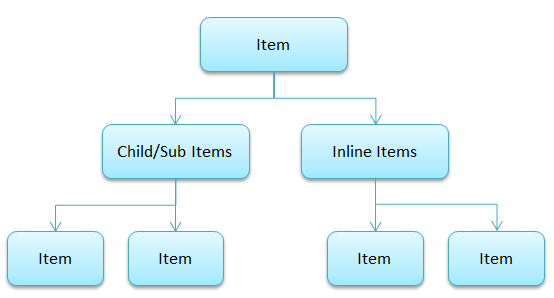
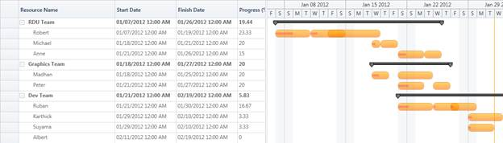

By default the Gantt will display single node in a row. This helps you to manage the project. When you want to manage the resources in a project, you need multiple nodes in a single row. Resource View Gantt enables you to manage the resources involved in the project.
In normal Gantt, the node represents the task or activity of the project. In Resource View Gantt, the node represents Tasks assigned to a resource. Multiple tasks assigned to a resource can be displayed in a single row. You can achieve this using the new mapping attribute of the InLineTaskMapping.
You can develop a populate Resource View Gantt by populating the collection of tasks in a single row by mapping the corresponding field in the underlying source to the InLineTaskMapping.
The following code illustrates this:
|
[XAML]
<gantt:GanttControl Grid.Row="1" x:Name="Gantt">
|
The following is the sample data source for the Resource View Gantt:
|
[C#]
ObservableCollection<Item> teams = new ObservableCollection<Item>();
|
The following is the Data Structure used to build a Resource View Gantt:

Data Structure:
· Team that hold info about the team.
· SubItems of Team will hold the list of Resources in that particular team.
· InLineItems of each Resource will holds the tasks assigned to the particular resource.
Information Displayed in Gantt
Grid Region: Grid will display only the information about the team and its resources (Sub Items). It will not display the info about Assigned Tasks (InLineItems).
Chart Region: Chart will display only the information about the team and the tasks assigned to each resource in the team (InLineItems). It will not display the info about Resources (Sub Items)

Figure 40: Information Displayed in Gantt
Samples Link
To view samples:
1. Open Syncfusion Dashboard.
2. Select User Interface > Silverlight.
3. Click Run Samples.
4. Navigate to Gantt > Data Binding item > Resource View Gantt sample.